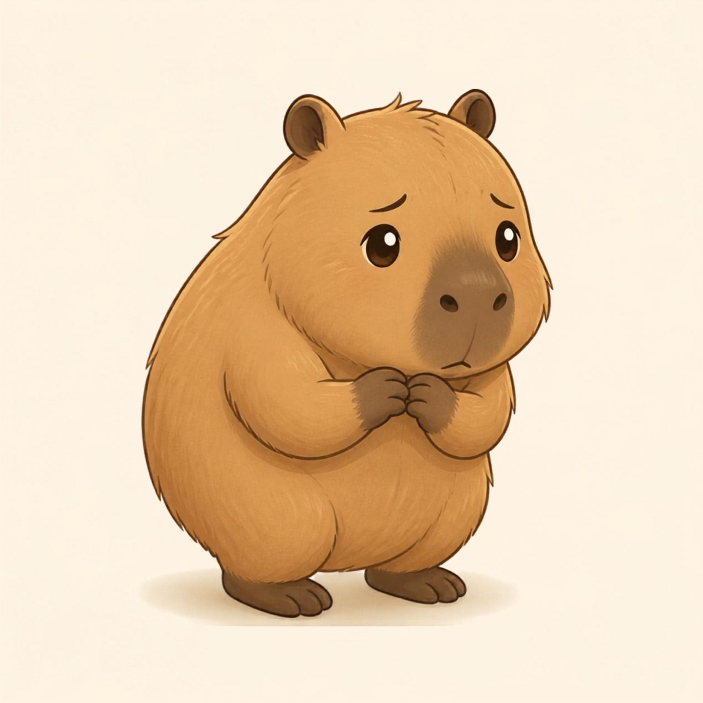

อยากเป็นคนโปรดแต่ดันโสดซะงั้น
ความคืบหน้า
ข้อ 1 / 9
สถานการณ์ที่ 1
คำถามกำลังโหลด...
Your Inner Energy
ผลการวิเคราะห์บุคลิกภาพ

ยังไม่ได้กำหนดค่า
Jumpy Capy
กลัวถูกทิ้ง กลัวผิดหวัง จนบางทีถอยหนีไปเองก่อนจะได้เริ่มรักใครซักคนจริงๆ อยู่เป็นโสดโดยไม่มีสาเหตุดีกว่าเป็นเศษ แล้วไม่มีความหมาย